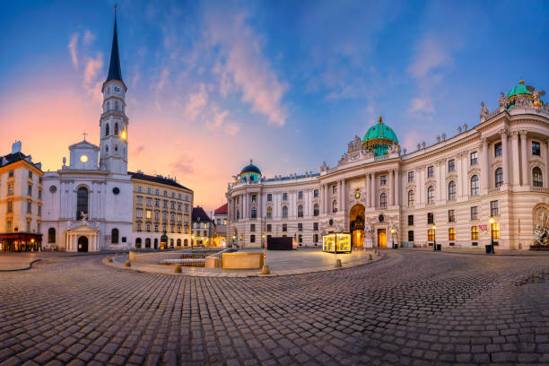

Vienna is the capital, most populous city and one of the nine federal states of Austria.
Vienna has approximately two million inhabitants in the city, its larger metropolian area has a population of nearly 3.9 million, representing nearly one-third of Austria's population. Vienna is the cultural, political and economic center of Austria, the fifth-largest city by population in the European Union and the most populous city on the Danube river.

Zur Official Website gehen ...